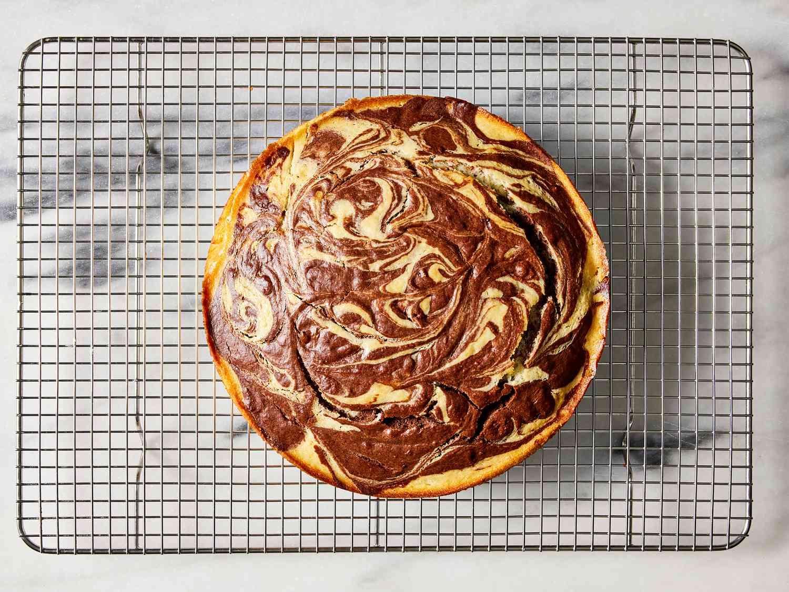

Marble Cake

Description
Marble cake is a classic dessert that combines the best of both worlds: vanilla and chocolate. This visually striking cake features swirls of light and dark batters, creating a marbled effect that is as beautiful as it is delicious. The tender crumb and rich flavor make marble cake a popular choice for celebrations and gatherings. Whether enjoyed on its own or paired with a cup of coffee or tea, this cake is sure to delight your taste buds.
Ingredients
- 2 1/2 cups all-purpose flour
- 2 tsp baking powder
- 1/2 tsp baking soda
- 1/2 tsp salt
- 1 cup unsalted butter, softened
- 1 1/2 cups granulated sugar
- 4 large eggs
- 1 cup buttermilk
- 2 tsp vanilla extract
- 1/4 cup unsweetened cocoa powder
- 1/4 cup hot water
Instructions
- Preheat oven to 350°F (175°C). Grease and flour a 10-cup bundt pan.
- In a medium bowl, whisk together flour, baking powder, baking soda, and salt. Set aside.
- In a large mixing bowl, cream butter and sugar until light and fluffy. Add eggs one at a time, beating well after each addition. Stir in vanilla extract.
- Gradually add the flour mixture to the wet ingredients, alternating with buttermilk. Mix until just combined.
- In a small bowl, combine cocoa powder and hot water to form a smooth paste. Add 1 cup of the cake batter to the cocoa mixture and stir until well combined.
- Layer the vanilla and chocolate batters in the prepared bundt pan, alternating between the two. Use a knife to create a marbled effect.
- Bake for 50-60 minutes, or until a toothpick inserted into the center comes out clean.
- Let the cake cool in the pan for 10 minutes, then transfer to a wire rack to cool completely.
- Slice and enjoy your delicious marble cake!
Back to Home